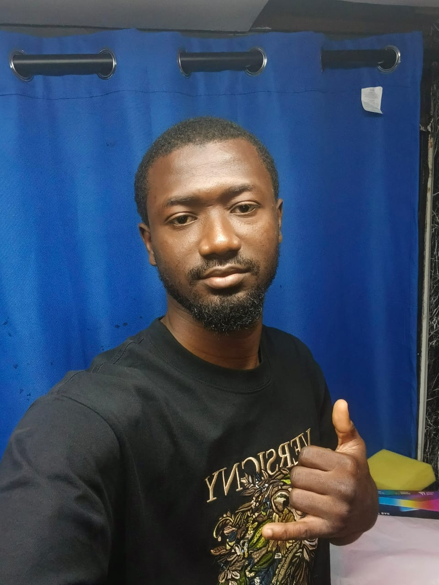
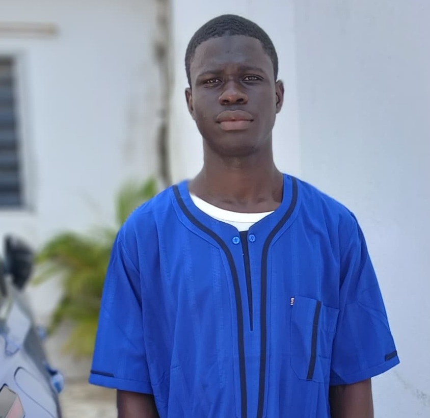

Date
Dimanche 23 août 2026
Date officielle confirmée pour la finale QI26.
Support court pour présenter les finalistes, les informations confirmées, les supports de communication et les décisions à valider en réunion.
Informations confirmées
Date
Date officielle confirmée pour la finale QI26.
Lieu
Lieu indiqué sur les supports d’organisation de la finale.
Organisateur
Association des Serviteurs d’Allah Azawajal.
Finalistes
Liste courte, uniforme et exploitable rapidement pendant une réunion de préparation.

Koumassi · 20 ans · Bac

Port-Bouët · 21 ans · Terminale D

Yopougon · 26 ans · Terminale

Koumassi · 24 ans · Génie Civil

Yopougon · 23 ans · Licence 2 de Droit

Adjamé · 22 ans · Terminale D

Adjamé · 20 ans · Licence 1

Cocody · 25 ans · L3 Géographie

Treichville · 19 ans · Terminale

Plateau · 22 ans · Licence 2
Répartition
| Commune | Finalistes | Nombre |
|---|---|---|
| Adjamé | Kouyaté Fatoumata Ramadan, Diabaté Oumar | 2 |
| Koumassi | Oyewo Olamide Fatiatou, Kokora Mohamed Ouattara | 2 |
| Yopougon | Sidibé Mohamed, Dosso Mohamed Lamine | 2 |
| Cocody | Sib Abdoulaye | 1 |
| Plateau | Sayore Nassiratou | 1 |
| Port-Bouët | Kouyaté Amara | 1 |
| Treichville | Sylla Aboubakar Sidik Abdoul Aziz | 1 |
Affiches
Les affiches ci-dessous sont prêtes pour présentation, réunion ou partage après validation finale de l’équipe communication.


Textes courts pour mobiliser les familles, communes et sympathisants sans réécriture pendant la réunion.